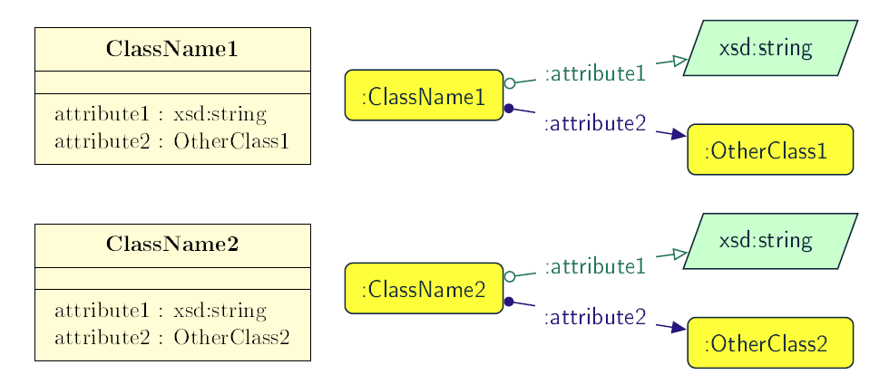
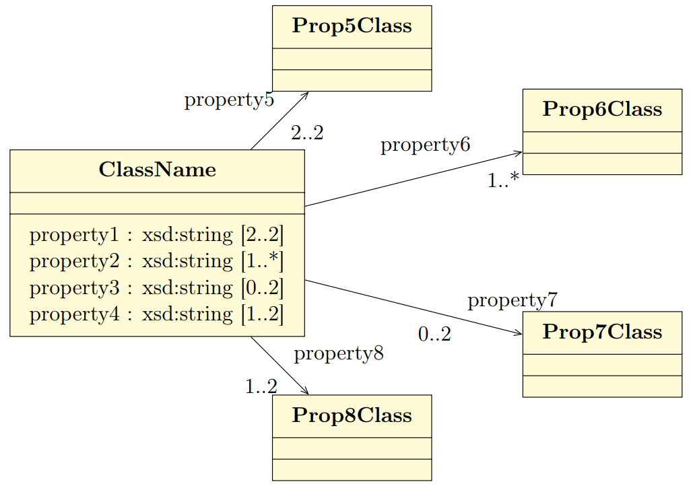
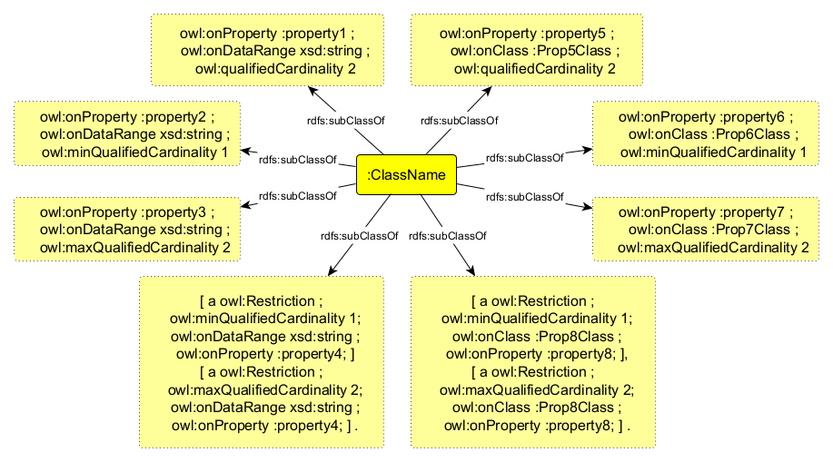

Transformation of UML classes and attributes
In this section are specified transformation rules for UML class and attribute elements. Table 1 provides an overview of the section coverage.
| UML element | Rules in core ontology layer | Rules in data shape layer | Rules in reasoning layer | Rules in JSON-LD context layer |
|---|---|---|---|---|
Class |
||||
Abstract class |
||||
Attribute |
||||
Attribute type |
||||
Attribute multiplicity |
Class
In UML, a Class [uml2.5] is purposed to specify a classification of objects. UML represents atomic classes as named elements of type Class without further features. In OWL, the atomic class, owl:Class, has no intention. It can only be interpreted by its name that has a meaning in the world outside the ontology. The atomic class is a class description that is simultaneously a class axiom .

Specify an OWL Class declaration axiom for each UML Class, where the URI of the OWL class is deterministically generated from the UML Class name.
| Ideally, in the implementation, this rule would be combined with the relevant rules (those for the core ontology layer) in the Transformation of UML descriptors section, to provide labels and documentation for the class at the time of its creation. |
Listing 1. Class declaration in Turtle syntax
|
Listing 2. Class declaration in RDF/XML syntax
|
Specify a SHACL NodeShape declaration axiom for each UML Class. The URIs of the node shape and of the OWL class they refer to, are deterministically generated from the UML Class name.
| Ideally, in the implementation, this rule would be combined with the relevant rules (those for the data shape layer) in the Transformation of UML descriptors section, to provide labels and documentation for the node shape at the time of its creation. |
Listing 3. Node shape declaration in Turtle syntax
|
Listing 4. Node shape declaration in RDF/XML syntax
|
Specify a term for each UML class by assigning an absolute URI of the class to the class name. Define a simple term definition or, an expanded term definition if the class includes properties. Create the term mapping as a top-level entry of the context object.
| The term mapping key contains the relevant class name. It does not contain a namespace prefix even if one is defined in the model. Namespace prefixes are not used as all classes defined in the model are presumed to be internal, that is belonging to the generated ontology. |
| If the class has attributes or related association or dependency connectors, all their term definitions are set within the single inner context object (see attribute, attribute range, attribute multiplicity, association/dependency, association/dependency range, association/dependency multiplicity). |
Listing 5. Simple class term mapping in JSON-LD syntax
|
Listing 6. Expanded class term mapping in JSON-LD syntax
|
Abstract class
In UML, an abstract Class [uml2.5] cannot have any instances and only its subclasses can be instantiated. The abstract classes are declared just like the regular ones (Rule C.01 and Rule C.02) and in addition a constraint validation rule is generated to ensure that no instance of this class is permitted.
OWL follows the Open World Assumption [owl2], therefore, even if the ontology does not contain any instances for a specific class, it is unknown whether the class has any instances. We cannot confirm that the UML abstract class is correctly defined with respect to the OWL domain ontology, but we can detect if it is not using SHACL constraints.
Specify a SHACL NodeShape declaration axiom for each abstract UML Class, with a SPARQL constraint that selects all instances of this class.
| Ideally, in the implementation, this rule would be combined with the relevant rules (those for the data shape layer) in the Transformation of UML descriptors section, to provide labels and documentation for the node shape at the time of its creation. |
Listing 7. Instance checking constraint in Turtle syntax
|
Listing 8. Instance checking constraint in RDF/XML syntax
|
Attribute
The UML attributes [uml2.5] are properties that are owned by a Classifier, e.g. Class. Both UML attributes and associations are represented by one meta-model element – Property. OWL also allows one to define properties. A transformation of UML attribute to OWL data property or OWL object property is done based on its type. If the type of the attribute is a primitive type it should be transformed into OWL data property. However, if the type of the attribute is a structured datatype, class or enumeration, it should be transformed into an OWL object property. These cases are illustrated in Figure 3.

Attributes can also be reused across multiple classes (i.e. multiple UML classes can own the same attributes), as illustrated in Figure 4. In such cases there should be special logic applied when defining the domain and range of these properties (see rules Rule C.06, Rule C.09).

Specify declaration axiom(s) for attribute(s) of a UML Class as OWL data or object properties, deciding based on their types. The attributes with primary types should be treated as data properties, whereas those typed with classes or enumerations should be treated as object properties.
| Ideally, in the implementation, this rule would be combined with the relevant rules (those for the core ontology layer) in the Transformation of UML descriptors section, to provide labels and documentation for the property at the time of its creation. |
Listing 9. Data property declaration in Turtle syntax
|
Listing 10. Data property declaration in RDF/XML syntax
|
Listing 11. Object property declaration in Turtle syntax
|
Listing 12. Object property declaration in RDF/XML syntax
|
Attribute owner
Specify data (or object) property domains for attribute(s). The domain of properties created for attributes that are reused in multiple classes should be the union of all the classes where the attribute is reused.
Listing 13. Data property domain specification in Turtle syntax
|
Listing 14. Data property domain specification in RDF/XML syntax
|
Listing 15. Object property domain specification in Turtle syntax
|
Listing 16. Object property domain specification in RDF/XML syntax
|
For reused attributes, like the ones depicted in Figure 4, the generated output should have the following form.
Listing 17. Data property domain specification for reused attributes in Turtle syntax
|
Listing 18. Data property domain specification for reused attributes in RDF/XML syntax
|
Listing 19. Object property domain specification for reused attributes in Turtle syntax
|
Listing 20. Object property domain specification for reused attributes in RDF/XML syntax
|
Specify a SHACL PropertyShape declaration axiom for each attribute.
| Ideally, in the implementation, this rule would be combined with the relevant rules (those for the core ontology layer) in the Transformation of UML descriptors section, to provide labels and documentation for the property shape at the time of its creation. |
Listing 21. PropertyShape declaration for attributes in Turtle syntax
|
Listing 22. PropertyShape declaration for attributes in RDF/XML syntax
|
For each UML class attribute, specify a datatype property by creating a property URI mapping with an absolute attribute URI in a node object. Set the term definition as a top-level entry inside the class’s inner context object.
| The term definition key contains the attribute and the relevant class names. It does not contain a namespace prefix even if one is defined in the model. Namespace prefixes are not used as all classes defined in the model are presumed to be internal, that is belonging to the generated ontology. |
Listing 23. Class attribute term mapping in JSON-LD syntax
|
Attribute type
Specify data (or object) property range for attribute(s).
The range of object properties created for attributes that are reused in multiple classes should be the union of all the classes specified as values for those attributes. Analogously, when a data property is reused across multiple classes with several different datatypes, its range is the union of those datatypes, expressed as an rdfs:Datatype with owl:unionOf (an OWL 2 DataUnionOf).
Listing 24. Data property range specification in Turtle syntax
|
Listing 25. Data property range specification in RDF/XML syntax
|
Listing 26. Object property range specification in Turtle syntax
|
Listing 27. Object property range specification in RDF/XML syntax
|
For reused attributes, like the ones depicted in Figure 4, the generated output should have the following form.
Listing 28. Object property range specification for reused attributes in Turtle syntax
|
Listing 29. Object property range specification for reused attributes in RDF/XML syntax
|
When the reused attribute is a data property whose reuse contexts declare different datatypes, the range is a union of those datatypes, wrapped in rdfs:Datatype.
Listing 30. Data property range (datatype union) for reused attributes in Turtle syntax
|
Listing 31. Data property range (datatype union) for reused attributes in RDF/XML syntax
|
Within the SHACL PropertyShape corresponding to an attribute of a UML Class, specify property constraints indicating the range class or datatype.
Listing 32. Property datatype constraint in Turtle syntax
|
Listing 33. Property datatype constraint in RDF/XML syntax
|
Listing 34. Property class constraint in Turtle syntax
|
Listing 35. Property class constraint in RDF/XML syntax
|
For each UML class attribute, specify its range by creating a type coercion entry with an absolute URI of the attribute datatype in a node object. Set the term definition as a top-level entry inside the class’s inner context object.
Listing 36. Class attribute type definition in JSON-LD syntax
|
Attribute multiplicity
In [uml2.5], multiplicity bounds of multiplicity element are specified in the form of [<lower-bound> .. <upper-bound>]. The lower-bound, also referred here as minimum cardinality or min is of a non-negative Integer type and the upper-bound, also referred here as maximum cardinality or max, is of an UnlimitedNatural type (see Section Primitive datatype). The strictly compliant specification of UML in version 2.5 defines only a single value range for MultiplicityElement. However, in practice, there might be a need to specify more than a single interval. Therefore, the below UML to OWL mapping covers a wider case – a possibility of specifying more value ranges for a multiplicity element. Nevertheless, if the reader would like to strictly follow the current UML specification, the particular single lower..upper bound interval is therein also comprised.


It should be noted that upper-bound of UML MultiplicityElement can be specified as unlimited: ``*''. In OWL, cardinality expressions serve to restrict the number of individuals that are connected by a property expression to a given number of instances of a specified type [owl2]. Therefore, UML unlimited upper-bound does not add any information to OWL ontology, hence it is not transformed. The UML to OWL mapping supports qualified cardinality restrictions (owl:*qualifiedCardinality), which impose constraints on a specific type associated with a property. Both object properties and datatype properties are supported.
For each attribute/relation multiplicity of the form ( min .. max ), where min and max are different than ``*'' (any), specify a subclass axiom where the OWL class, corresponding to the UML Class, specialises an anonymous restriction of properties formulated according to the following cases:
-
exact cardinality, e.g. [2..2]
-
minimum cardinality only, e.g. [2..*]
-
maximum cardinality only, e.g. [*..2]
-
maximum and maximum cardinality, e.g. [1..2]
-
at least one occurence: [1..*]
The restriction describes a constraint that is formulated with respect to the range type of the defined OWL property, that is one of the following:
-
class
-
datatype
For the special case of multiplicity [1..*], specify the existential constraint using the owl:someValuesFrom property instead of a cardinality constraint with owl:minQualifiedCardinality.
Listing 37. Exact cardinality constraint for datatype property in Turtle syntax
|
Listing 38. Exact cardinality constraint for datatype property in RDF/XML syntax
|
Listing 39. Exact cardinality constraint for object property in Turtle syntax
|
Listing 40. Exact cardinality constraint for object property in RDF/XML syntax
|
Listing 41. Min cardinality constraint for datatype property in Turtle syntax
|
Listing 42. Min cardinality constraint for datatype property in RDF/XML syntax
|
Listing 43. Min cardinality constraint for object property in Turtle syntax
|
Listing 44. Min cardinality constraint for object property in RDF/XML syntax
|
Listing 45. Max cardinality constraint for datatype property in Turtle syntax
|
Listing 46. Max cardinality constraint for datatype property in RDF/XML syntax
|
Listing 47. Max cardinality constraint for object property in Turtle syntax
|
Listing 48. Max cardinality constraint for object property in RDF/XML syntax
|
Listing 49. Min and max cardinality constraints for datatype property in Turtle syntax
|
Listing 50. Min and max cardinality constraints for datatype property in RDF/XML syntax
|
The owl:someValuesFrom is used instead of owl:minQualifiedCardinality with a value of 1 because, while they are conceptually equivalent, they are treated differently in Description Logics. In particular, owl:minQualifiedCardinality can only be applied to simple object properties, whereas owl:someValuesFrom can also be used with non-simple ones, offering greater flexibility and avoiding certain reasoning limitations.
Listing 51. Existential and max cardinality constraints for object property in Turtle syntax
|
Listing 52. Existential and max cardinality constraints for object property in RDF/XML syntax
|
Attributes with multiplicity exactly one correspond to functional object or data properties in OWL. If we apply the previous rule specifying min and max cardinality will lead to inconsistent ontology. To avoid that it is important that min and max cardinality are not generated from [1..1] multiplicity but only functional property axiom.
For each attribute that has multiplicity exactly one, i.e. [1..1], specify a functional property axiom.
Listing 53. Declaring a functional property in Turtle syntax
|
Listing 54. Declaring a functional property in RDF/XML syntax
|
Within the SHACL PropertyShape corresponding to an attribute of a UML Class, specify property constraints indicating the minimum and maximum cardinality, only where min and max are different from ``*'' (any) and multiplicity is not [1..1]. The expressions are formulated according to the following cases.
-
exact cardinality, e.g. [2..2]
-
minimum cardinality only, e.g. [1..*]
-
maximum cardinality only, e.g. [*..2]
-
minimum and maximum cardinality , e.g. [1..2]
Listing 55. Exact cardinality constraint in Turtle syntax
|
Listing 56. Exact cardinality constraint in RDF/XML syntax
|
Listing 57. Min cardinality constraint in Turtle syntax
|
Listing 58. Min cardinality constraint in RDF/XML syntax
|
Listing 59. Max cardinality constraint in Turtle syntax
|
Listing 60. Max cardinality constraint in RDF/XML syntax
|
Listing 61. Min and max cardinality constraint in Turtle syntax
|
Listing 62. Min and max cardinality constraint in RDF/XML syntax
|
Specify a default container type for a class attribute that can accept more than a one value by setting the fixed @set keyword as a value for the @container key. Set the container type entry inside a term definition created as a top-level entry inside the class’s inner context object.
Listing 63. Attribute container definition in JSON-LD syntax
|